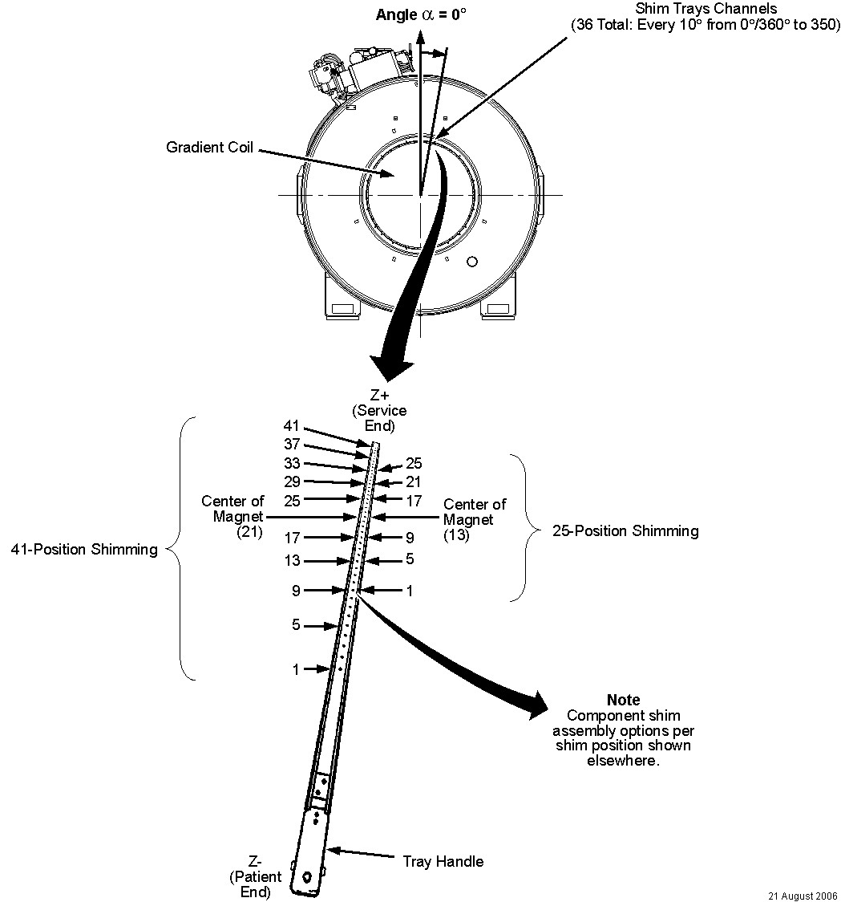

Illustration 45: Example ShimTool Printed Report (Pages 3 and 4 of 25-Position Report)

| NOTE: | See Illustration 45 for a sample ShimTool shimming report, Illustration 46 for the LCC300 shim tray layout, and Illustration 47 for assembly of component shim per shim position. Illustration 45 shows the C: drive directory paths used by Windows 2000 ShimTool installations. Windows XP installations use D: drive directory paths instead. |
Illustration 45: Example ShimTool Printed Report (Pages 3 and 4 of 25-Position Report)
Illustration 46: Shim Tray Layout

Illustration 47: Assembly of Component Shims Per Shim Position